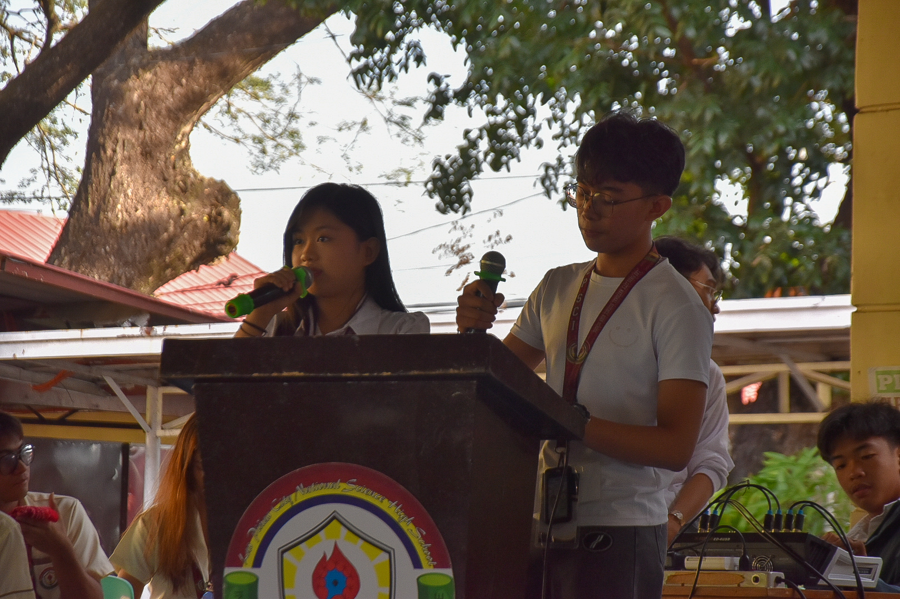
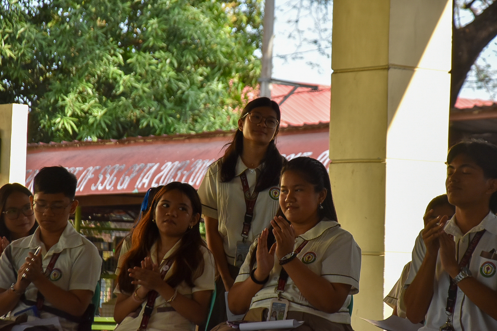
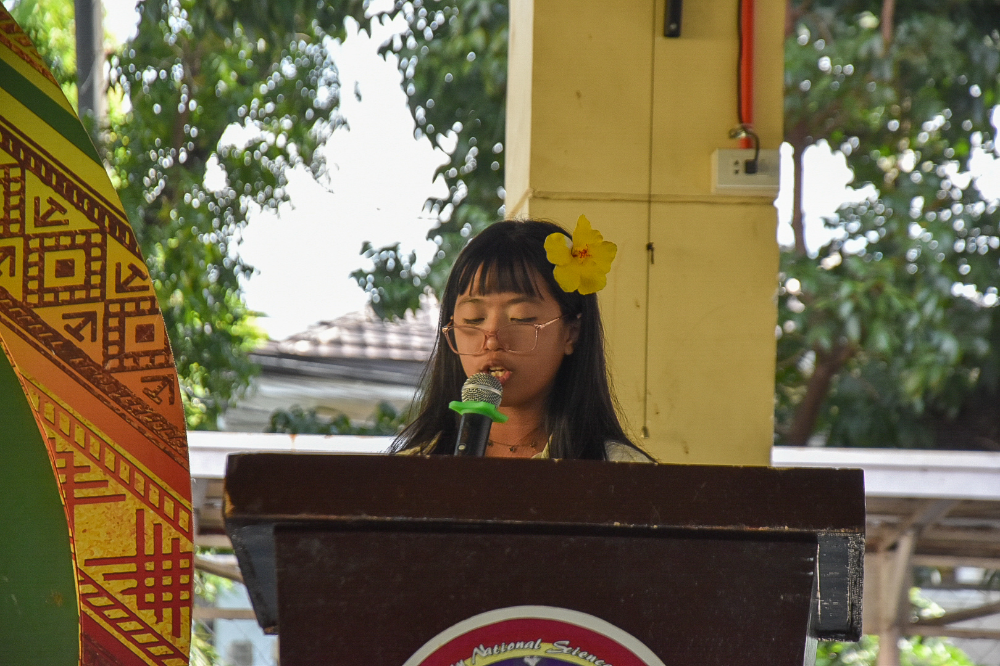

Reflecting on Miting de Avance
Attending the Miting de Avance was a crucial experience for me as a student. It gave me the opportunity to listen to the platforms and visions of the candidates, which greatly helped me in choosing the right leaders for our SSLG.
More than just a school event, it served as a valuable lesson in civic responsibility. By observing how the candidates presented themselves and answered questions, I learned how to critically evaluate platforms. This experience didn't just help me vote today; it equipped me with the skills to identify the right people to vote for in the future.